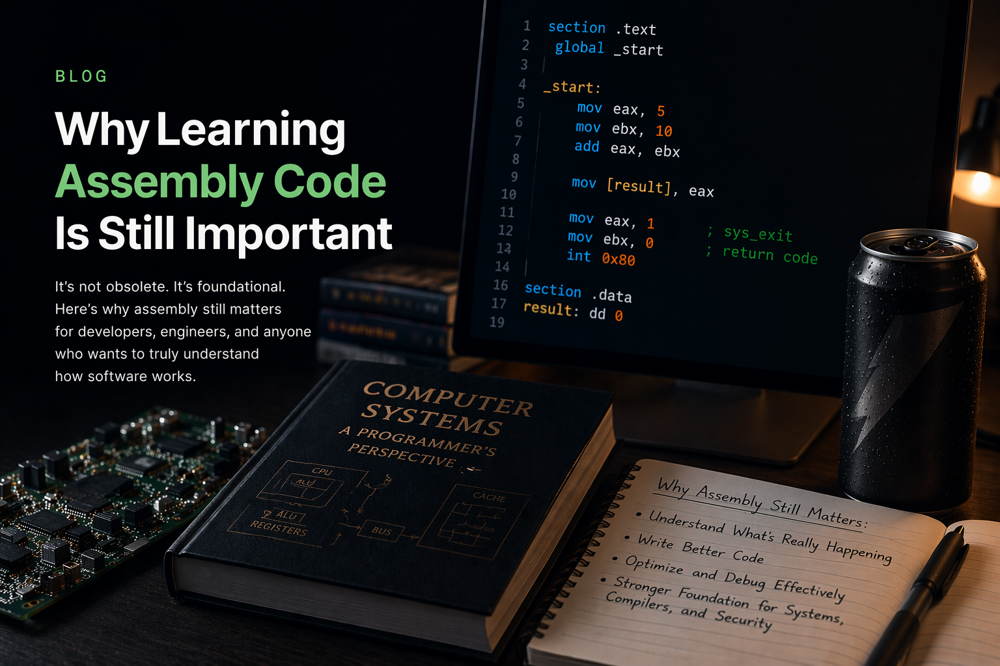

Blog
Software engineering notes, milestones, and lessons learned.
A growing collection of posts on technical growth, certifications, projects, and the work behind becoming a stronger software engineer.
Blog
A growing collection of posts on technical growth, certifications, projects, and the work behind becoming a stronger software engineer.
April 15, 2026
A practical reflection on what a small NASM project taught me about memory, operating systems, debugging, and performance.

April 14, 2026
What the program covered, what I actually learned from it, and how it helped shape the foundation I use in software engineering work today.